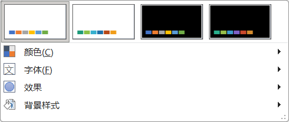
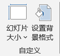
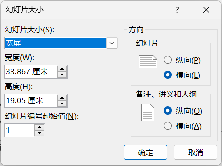
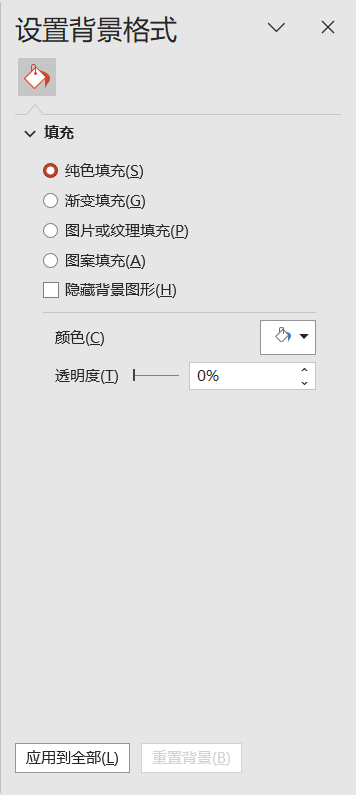

设计
Designer
- . 创作PPT时 首先 要做的事情
- . 统一为文档指定基调：主题、字体、颜色、背景等，避免经常性、重复性设置
- . 创作过程可以随时实现"一键换肤"
- . 所有的操作都是全局性的
- 主题
- . 统一为文档设置主题
- . 每个主题都有名字
- . 鼠标放上去可以预览主题应用的效果，单击确认使用；预览的同时还会显示每个主题的名字，如office主题
- . 等级考试的最爱
- 变体
-
 变体 -
颜色：提供不同的调色卡字体：可以分别指定中文和西文的标题和正文字体
- 自定义
-
幻灯片大小
.标准 4:3
.宽屏 16:9
.自定义大小：正式场合多使用2倍屏、3倍屏甚至更多屏
 自定义  自定义大小 自定义背景格式.如何设置水印?
 自定义背景格式